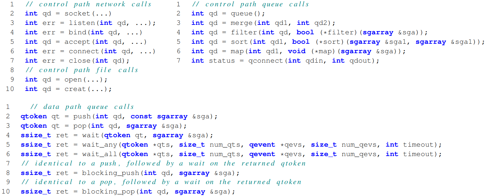
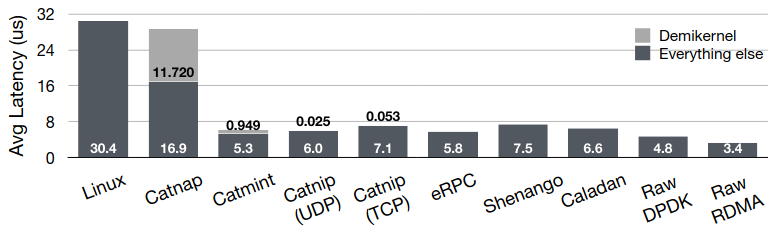
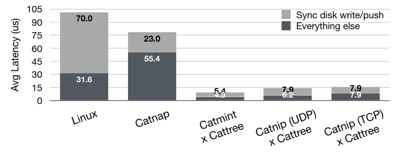

# `libuv` & Demikernel <div class="center"> **Gabe Parmer** © Gabe Parmer, 2025, All rights reserved </div> --- # `libuv` --- ## An View on Managed Concurrency: `libuv` --- C library that manages *event-based* concurrency. - Event-based concurrency - related to, but not the same as the events used with `poll`, `select`, `epoll`. Goal: Avoid thread overheads $\to$ use a thread-per-core - How do we manage blocking operations? - `read` $\to$ `uv_read(data, ..., callback_function)` --- ```c [2-4|9|11,25-26|30,39-40] // Normal code: fd = open(....); // can block! ret = read(fd, ...); // can block! ret = truncate(fd, ...); // can block! // Event-driven code with libuv! // test/test-fs.c r = uv_fs_open(loop, &open_req1, "test_file2", UV_FS_O_RDWR, 0, open_cb); static void open_cb(uv_fs_t* req) { int r; ASSERT_PTR_EQ(req, &open_req1); ASSERT_EQ(req->fs_type, UV_FS_OPEN); if (req->result < 0) { fprintf(stderr, "async open error: %d\n", (int) req->result); ASSERT(0); } open_cb_count++; ASSERT(req->path); ASSERT_OK(memcmp(req->path, "test_file2\0", 11)); uv_fs_req_cleanup(req); memset(buf, 0, sizeof(buf)); iov = uv_buf_init(buf, sizeof(buf)); r = uv_fs_read(loop, &read_req, open_req1.result, &iov, 1, -1, read_cb); ASSERT_OK(r); } static void read_cb(uv_fs_t* req) { int r; ASSERT_PTR_EQ(req, &read_req); ASSERT_EQ(req->fs_type, UV_FS_READ); ASSERT_GE(req->result, 0); /* FIXME(bnoordhuis) Check if requested size? */ read_cb_count++; uv_fs_req_cleanup(req); if (read_cb_count == 1) { ASSERT_OK(strcmp(buf, test_buf)); r = uv_fs_ftruncate(loop, &ftruncate_req, open_req1.result, 7, ftruncate_cb); } else { ASSERT_OK(strcmp(buf, "test-bu")); r = uv_fs_close(loop, &close_req, open_req1.result, close_cb); } ASSERT_OK(r); } ``` --- ## Managing Concurrency 1. Use non-blocking system calls, 2. Use event loops with kernel notification of file-descriptors with activity through `epoll`, 3. A thread pool to handle system calls that cannot be non-blocking (e.g. `open`). --- # Demikernel --- ## Cloud Infrastructure - Systems backing the cloud services we use - S3: store blobs persistently - Key-value stores --- ## Cloud Infrastructure Optimization - Providers want infrastructure to be as fast as possible - latency impacts most tenants - fan-out requests - 2x efficiency = 0.5x hardware/power/heat > Extreme optimization here is a *competitive advantage* --- # Extreme Optimization --- ## SR-71: Blackbird - Spy airplane, designed to *outrun* interceptors - **85K ft** vs. 30K-42K ft commercial airplane - **Mach 3.3** (2,193 mph, 3529 km/h) - LA$\to$DC in **64 min** --- --- ## Aerodynamics Challenges - Delta-wing - little wind resistance @ Mach 3.3 - comparably little lift - Couldn't take off w/ much fuel - Immediately "refuel" when in air - Landings at 200mph - parachutes for braking --- ## Thermal Challenges - Air resistance - Windscreen/wings ~600 F (316 C) - Leading edge of wings @ 1100 F - Stored fuel in fuselage panels - Too hot for plastic bladder - Metal badder too heavy - Leaked fuel on the ground - Till body panels expanded due to heat - Allowable within "drips per minute" limits - Titanium body (bought from the USSR!) --- ## JP-7 Fuel - JP-7 fuel w/ high combustion point (to handle the heat) - Ignite fuel - most jets use igniter plugs (spark plugs) - does *nothing* with JP-7 - Uses Triethylborane (TEB) which explodes w/ atmosphere contact - Only 16 "shots" per take-off --- ## Concorde - Commercial supersonic aircraft London$\leftrightarrow$NYC - Mach 2.02 - Delta-wing - aerodynamics challenges --- --- Landing - Must pitch back to "catch air" - Pilots can't see the ground! - What do you do??? --- --- ## Remake the World *Extreme performance* requires *extreme trade-offs* - willingness to start from scratch - cast out existing designs --- # Demikernel: OS for Kernel-Bypass --- ## Simple Application Get 1. receive request 2. access blob on disk/cache 3. send data reply Update 1. receive blob update 2. commit to disk 3. send confirmation --- ## OS Overheads 1. Network interrupt 2. Device driver buffer mgmt 3. Socket management/allocation 4. Network protocol 5. VFS read/write 6. Data copies 7. SSD interrupt 3x system calls, 2x interrupts --- ## Demikernel API - Concurrency - Zero-copy - *Direct I/O access* --- ## Bypass I/O Data-Plane Development Kit (DPDK) - Network driver *at user-level* - Directly talk to the device at user-level $\to$ No kernel transitions/overheads Polling on network device $\to$ No interrupts ---  --- ## Network Echo  --- ## Echo + Logging  --- ## Shed Off All OS Abstractions! What's left? - What do we want from an "OS"? Demikernel - concurrency - abstraction APIs over driver - zero-copy